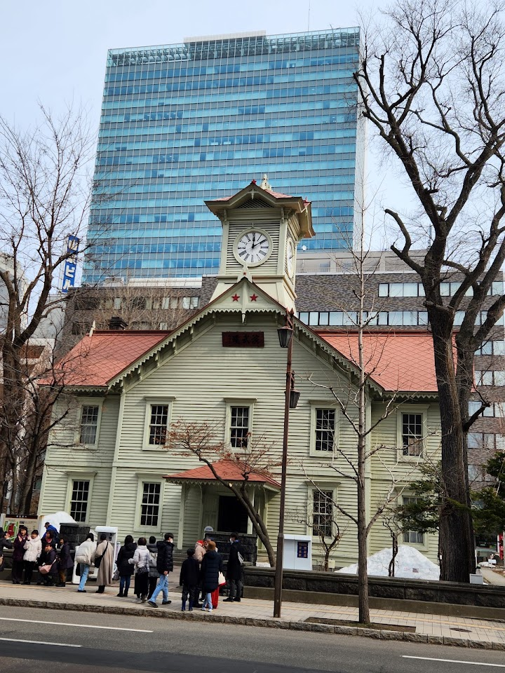
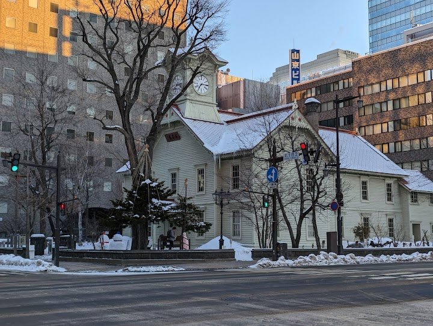
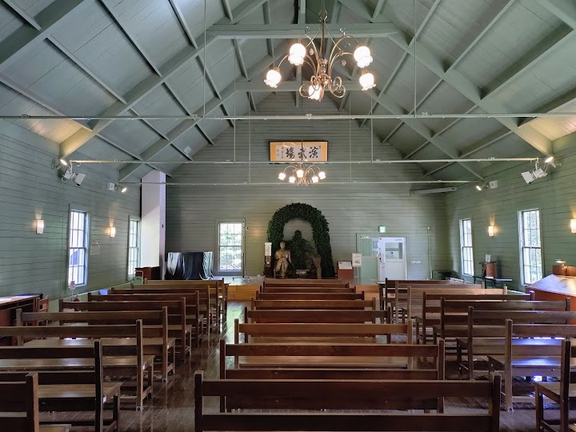
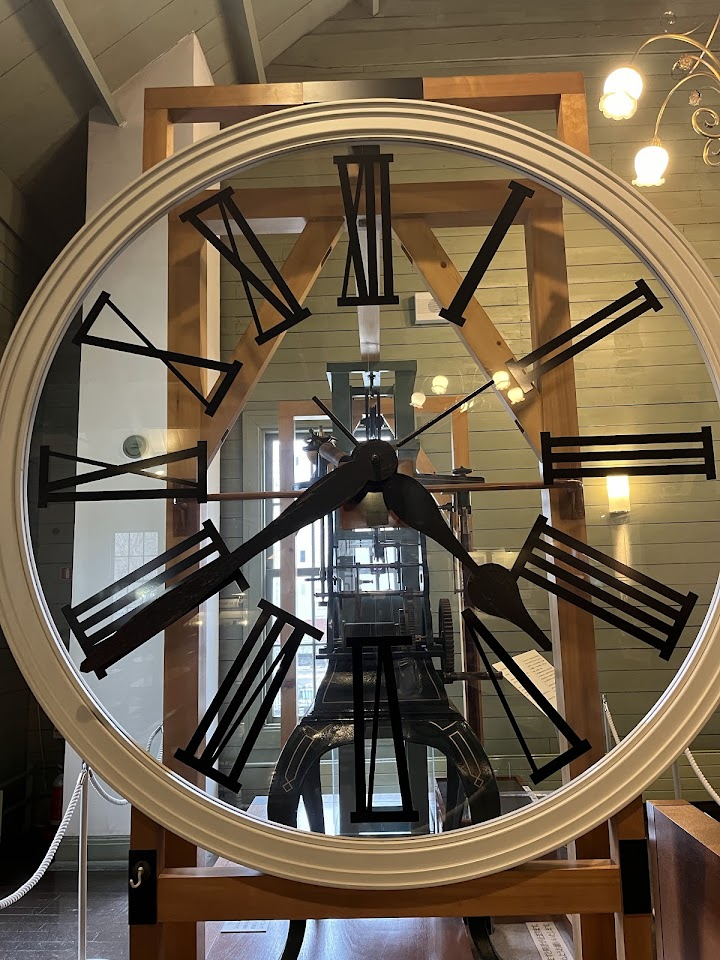
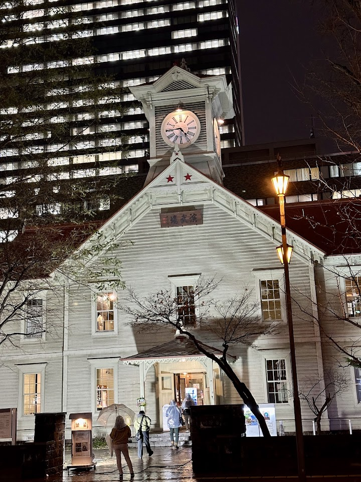

Sapporo Clock Tower (suggested)
Built in 1878, this iconic wooden clock tower now houses a museum on the history of Sapporo.
Open in Google Maps (street view, more photos and reviews there)






Visitor tips on finding it and getting there
Visited on 15 Dec 2025. Admission ticket is 350 yen per person. Sapporo Clock Tower is one of the city’s most iconic historical landmarks and is listed as an Important Cultural Property of Japan. Built in 1878 as the drill hall for the former Sapporo Agricultural College (now Hokkaido University), it is the oldest wooden clock tower still standing in Japan. The building features a charming American-style Victorian design with a white exterior and a bright red roof, standing out amid the modern buildings in downtown Sapporo. Its large clock, made in the United States, has been keeping time sin